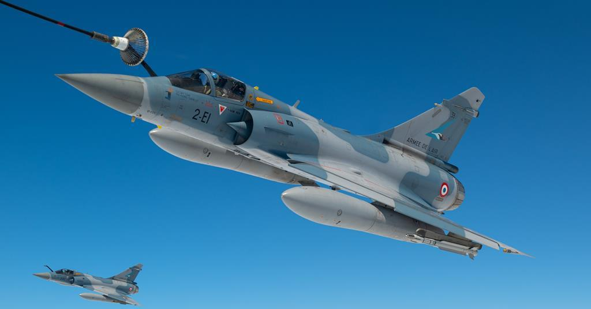
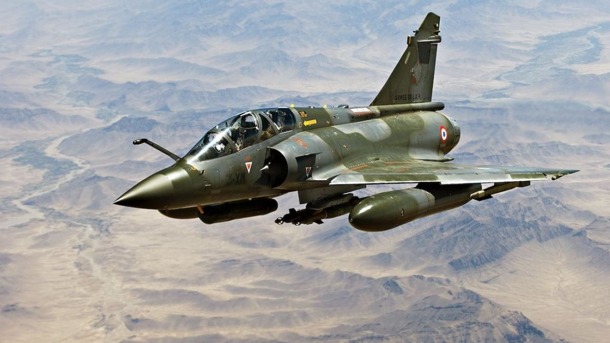
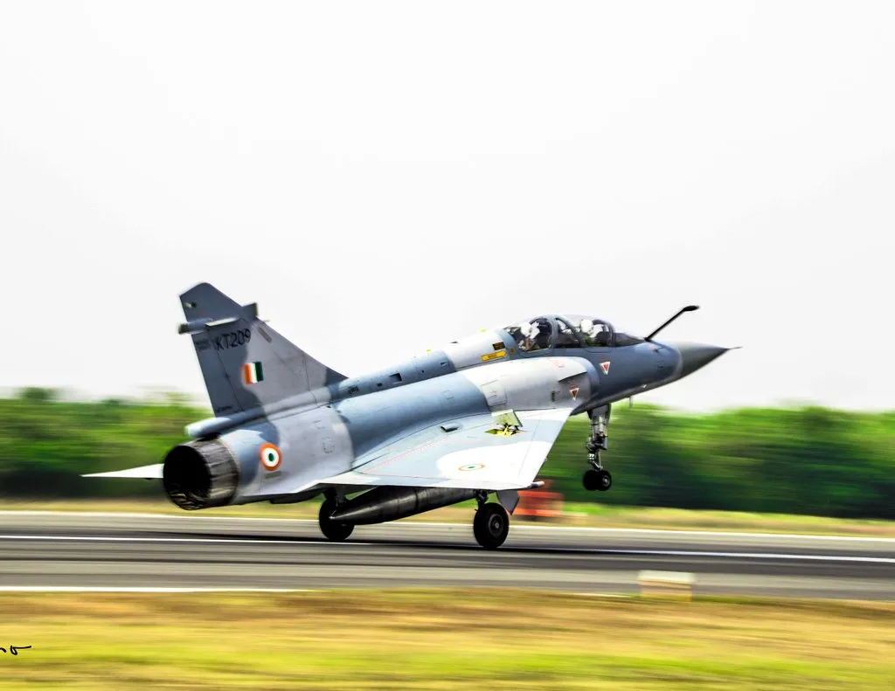

Dassault Mirage 2000
Manufacturer

Dassault Aviation
Country of Origin
- France
Specifications
| Parameter | Value |
|---|---|
| Length | 14.36 m |
| Wingspan | 9.13 m |
| Height | 5.20 m |
| Max Speed | Mach 2.2 |
| Range | 1,550 km |
| Service Ceiling | 17,060 m |
Armaments
The Mirage 2000 is a multirole, single-engine fourth-generation jet fighter known for its versatility and has been equipped with a variety of air-to-air and air-to-ground ordnance including:
- MICA air-to-air missiles
- Magic II close combat missiles
- SCALP EG long-range stand-off missiles
- Laser-guided bombs
- 30mm DEFA cannon with 125 rounds
Countries Currently Using Mirage 2000
- France
- India
- United Arab Emirates
- Greece
History
Developed by Dassault Aviation, the Mirage 2000 is a cornerstone of the French Air Force. The aircraft made its first flight in 1978 and has since been used in various combat roles across multiple conflicts. Known for its delta wing design, the Mirage 2000 has evolved through several variants, each enhancing its capabilities in interception, ground attack, and multirole missions.
Gallery


